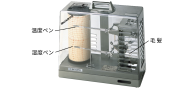

2024年
問題77 環境測定に関する次の記述のうち，最も不適当なものはどれか．
（1）サーミスタ温度計は，電気抵抗式温度計の一種である．
（2）相対湿度の測定には，毛髪などの伸縮を利用する方法がある．
（3）アスマン通風乾湿計は，周囲気流及び熱放射の影響を防ぐ構造となっている．
（4）ピトー管による風速測定では，ストークスの定理を用いる．
（5）換気量の測定には，トレーサガスの濃度減衰を利用する方法がある．
2024年
問題77 正解（4） 頻出度AA
「ストークスの定理」⇛「ベルヌーイの定理」が正しい（ストークスの定理はベクトル解析なる学問で，線積分を面積分に変換する公式が有名）．
ベルヌーイの定理から動圧＋静圧＝全圧である．ピトー管（2024-77-1 図）では，静圧と全圧の差から動圧を求める ことができる．
ピトー管の全圧測定口では流速\(v=0\ {\rm m/s}\) (よどみ点という)となって動圧は全て静圧に変換している．
動圧を\(q\)［Pa］とすれば，ベルヌーイの定理から，
これから，
ピトー管はダクト内などの風速を測定するのに利用される．室内の風速など微風の測定には適さない．
-(1) サーミスタ温度計は電気抵抗式温度計の一種である．サーミスタ(thermistor)とは，温度変化に対して電気抵抗の変化の大きい抵抗体のことである．最も利用多いNTCサーミスタはニッケル，マンガン，コバルト，鉄などの酸化物を混合して焼結したものである．
電気抵抗式温度計は精度が高く，遠隔で示度を読み取れる利点を持つ．
-(2) 自記毛髪湿度計2024-77-2図参照．構造上，自記毛髪湿度計は振動の影響を受けやすく，また，極端な低湿度，高湿度の環境で利用するのは適当でない．

出典 株式会社佐藤計量器製作所
https://www.sksato.co.jp/7234-00/
-(3) アスマン通風乾湿計（2024-77-3図）は，湿球における水の蒸発量は気流によって異なるので，一定速度で回転するゼンマイ駆動又はモータ駆動の風車機構を内蔵する．湿球への通風速度は3m/s以上必要である．

出典 柴田科学株式会社
https://www.sibata.co.jp/item/598/ を基に作成
放射熱の影響を防ぐため温度計を挿入した金属管はクロームメッキを施されている．
測定点に設置し，通風開始後3分と4分の値を読み取り変化がなければ測定値とする．
相対湿度100%でない限り，湿球温度は常に乾球温度よりも低い値を示す．
-(5) トレーサガス減衰法は，室内の二酸化炭素等をトレーサ(指標物質)として，トレーサの濃度変化から，下記のとおり計算によって換気量を求める間接換気量測定法である．
ただし，
\(Q\)：換気量［m3/h］，
\(C_U\)：トレーサーガス上流濃度［ppm］，
\(C_D\)：トレーサーガス下流濃度［ppm］，
\(C_I\)：注入トレーサーガス濃度［ppm］，
\(F_I\)：トレーサーガス注入量［m3/h］